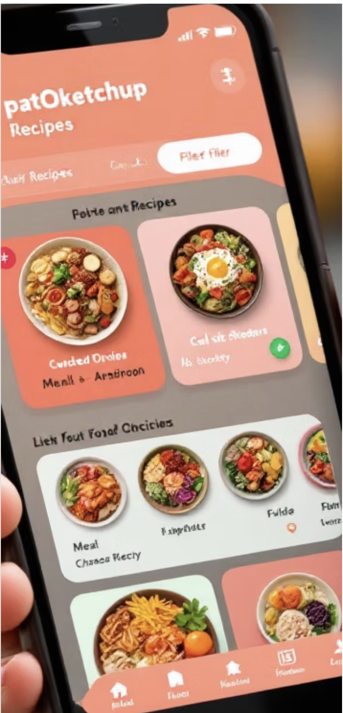

Cuisiner avec les restes n'a jamais été aussi facile
Ajoute tes ingrédients dans "Mon Frigo", laisse l'application te proposer des recettes adaptées et limite le gaspillage. Compatible TheMealDB et sauvegarde personnelle via Supabase.

Fonctionnalités clés
- Recherche de recettes par ingrédients (Mon Frigo)
- Traduction automatique d'ingrédients (FR → EN) avec dictionnaire local
- Sauvegarde du frigo par utilisateur (Supabase)
- Affichage détaillé des recettes et suggestions anti-gaspi